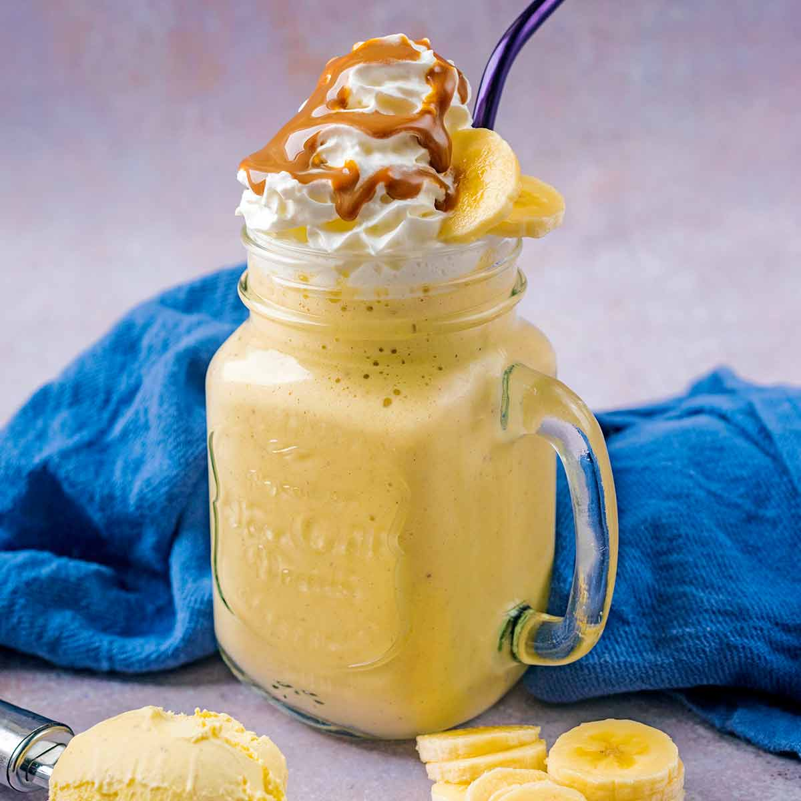

Bannana Shake

Description:
This is a recipe to make a bannana shake. You will need a blender, a cup, and the following ingredients:
Ingredients:
- Bannana
- Milk
- Eggs(this choice is optional and can be left out)
- Honey(or your choice of sweetener)
- Choice of additional fat like creamer or mct oil(or other creamer of preference)
- Whipped Cream
- Cinnamon
Steps:
- Grab your bannana and toss it in the blender.
- Add 8 ounces of milk or to your preference of texture.
- Add an ounce of creamer or whatever your preference is.
- Add the raw egg(s) you choose (this step is optional)
- Add 2 tablesppons of choice of sweetner or adjust to taste.
- Blend all the ingredients together until mixed to desired texture.
- Once finish, pour into your cup add whipped cream to top, sprinkle cinnamon and enjoy.